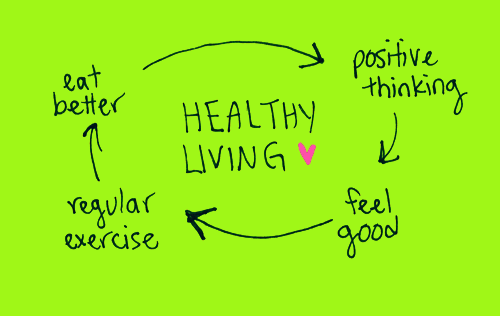
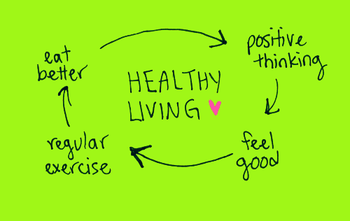

Healthy Living

 
This is a heading Welcome to my website! Here we encourage you to stay healthty and live healthy.
There is so many ways to avoid and get rid of unhealthy eating habits and ways of living.
This page is designed to show you the effect that food, activeness, amd way of living can positively impact your life.
Here we compare styles of life to show you Healthy living is the way to go!
Healthy habits reduce the risk of certain diseases, improve your physical appearance and mental health, and give your energy level a much needed boost. You won’t change your mindset and behavior overnight, so be patient and take it one day at a time.